SQL - PLSQL
ORACLE
PARTE SQL
Crea las siguientes tablas en Postgres y en ORACLE, con las restricciones correspondientes.
| TABLA PRODUCTOS | |||
|---|---|---|---|
| CodProducto | NUMBER | ||
| Nombre | VARCHAR2, de 20 | ||
| Tipo | VARCHAR2, de 15 | Menaje, Informática o Telefonía | |
| PrecioUnitario | NUMBER | Entre 0 y 5000 |
| TABLA CLIENTES | |||
|---|---|---|---|
| DNICliente | VARCHAR2, de 10 | 8 números, un guión y una mayúscula | |
| Nombre | VARCHAR2, de 20 | ||
| FechaAlta | Fecha | Posterior a 2019 | |
| País | VARCHAR2, de 20 | España, Italia o Francia |
| TABLA VENTAS | |||
|---|---|---|---|
| CodProducto | NUMBER | ||
| DNICliente | VARCHAR2, de 10 | ||
| FechaVenta | Fecha | ||
| NumUnidades | NUMBER |
TABLA PRODUCTOS
CREATE TABLE PRODUCTOS(
CodProducto NUMBER,
Nombre VARCHAR2(20),
Tipo VARCHAR2 (15),
PrecioUnitario NUMBER,
CONSTRAINT PK_productos PRIMARY KEY (CodProducto),
CONSTRAINT Chk_Tipo CHECK (Tipo IN ('Menaje', 'Informatica', 'Telefonia')),
CONSTRAINT Chk_Precio CHECK (PrecioUnitario BETWEEN 0 AND 5000)
);
TABLA CLIENTES
CREATE TABLE CLIENTES(
DNI_Cliente VARCHAR2(10),
Nombre VARCHAR2(20),
FechaAlta DATE,
Pais VARCHAR2(20),
CONSTRAINT PK_Clientes PRIMARY KEY (DNI_CLIENTE),
CONSTRAINT Chk_DNI CHECK (REGEXP_LIKE(DNI_CLIENTE, '^[0-9]{8}-[A-Z]$')),
CONSTRAINT Chk_Alta CHECK (FechaAlta > DATE '2019-12-31'),
CONSTRAINT Chk_Pais CHECK (Pais IN ('España', 'Italia', 'Francia'))
);
TABLA VENTAS
CREATE TABLE VENTAS(
CodProducto NUMBER,
DNI_Cliente VARCHAR2(10),
FechaVenta DATE,
NumUnidades NUMBER,
CONSTRAINT PK_Ven PRIMARY KEY (DNI_CLIENTE, FechaVenta, CodProducto),
CONSTRAINT FK_Cod FOREIGN KEY (CodProducto) REFERENCES PRODUCTOS(CodProducto),
CONSTRAINT FK_Dni FOREIGN KEY (DNI_CLIENTE) REFERENCES CLIENTES(DNI_CLIENTE)
);
Realizar una consulta que muestre el nombre del último producto que compró cada cliente que ha realizado alguna compra en los últimos diez días.
SELECT P.Nombre as producto, C.Nombre as cliente
FROM PRODUCTOS P , CLIENTES C
WHERE (P.codproducto, C.DNI_Cliente) IN (SELECT V.codproducto, V.DNI_Cliente
FROM VENTAS v
WHERE V.FechaVenta IN (SELECT MAX(FechaVenta)
FROM VENTAS V2
WHERE V2.DNI_CLIENTE = V.DNI_CLIENTE)
AND FechaVenta >= SYSDATE -10);
PRODUCTO CLIENTE
----------------- ----------
Redmi Note 10 Alejandro
Teclado Raul
Realizar una consulta que muestre el importe total de las compras de productos de Tipo ‘Menaje’ para cada uno de los clientes junto con el nombre de dicho cliente incluyendo aquellos que no han comprado productos de ese tipo.
SELECT C.Nombre as cliente, COALESCE(SUM(V.NumUnidades * P.PrecioUnitario),0) as importe
FROM Clientes C , PRODUCTOS P, VENTAS V
WHERE C.DNI_CLIENTE = V.DNI_CLIENTE (+)
AND P.CODPRODUCTO = V.CODPRODUCTO (+)
AND Tipo = 'Menaje'
GROUP BY C.NOmbre;
CLIENTE IMPORTE
--------------- -----------
Alejandro 60
Raul 150
Lucia 10
Sophie 90
Alessia 0
Kiki 0
Pierre 0
Jacques 0
Pinedi 0
9 filas seleccionadas.
Realizar una vista llamada ‘Productos de Telefonía’ con los siguientes datos: Código del Producto, Nombre del Producto, Importe Total de las Ventas del Producto, Fecha de la última venta del producto y país del primer cliente que lo compró. En la vista solo deben aparecer los artículos de tipo ‘Telefonía’.
Primero creo una vista distinta para seleccionar el país del primer cliente que compró cada producto de Telefonía
CREATE OR REPLACE VIEW PrimerPais AS
SELECT Pais, codproducto
FROM CLIENTES C, PRODUCTOS P
WHERE Tipo = 'Telefonia'
AND (C.DNI_CLIENTE, P.CODPRODUCTO) IN (SELECT V.DNI_CLIENTE, V.CodProducto
FROM VENTAS V
WHERE FechaVenta = (SELECT MIN(FechaVenta)
FROM VENTAS V2
WHERE V2.CODPRODUCTO = V.CODPRODUCTO));
Vista Principal:
CREATE OR REPLACE VIEW Productos_de_telefonia AS
SELECT P.CODPRODUCTO, P.Nombre,SUM(P.PrecioUnitario * V.NumUnidades) as importe, MAX(FechaVenta) as UltVenta, Pais as Pais_Primera_Compra
FROM VENTAS V, PRODUCTOS P , PrimerPais PP
WHERE V.CODPRODUCTO = P.CODPRODUCTO
AND V.CODPRODUCTO = PP.CODPRODUCTO
AND Tipo = 'Telefonia'
GROUP BY P.codproducto, P.Nombre, Pais;
SELECT * FROM Productos_de_telefonia;
CODPRODUCTO NOMBRE IMPORTE ULTVENTA PAIS_PRIMERA_COMPRA
----------- ----------------- -------- ------------- ---------------------
7 Redmi Note 10 4500 28/11/24 España
8 Tablet 750 05/04/23 Francia
9 Smartwatch 300 25/05/22 España
Muestra los distintos tipos de productos junto al nombre del cliente que ha comprado más unidades de ese tipo de producto en los últimos diez años.
SELECT Tipo , C.Nombre as cliente
FROM VENTAS V, PRODUCTOS P, CLIENTES C
WHERE V.CODPRODUCTO = P.CODPRODUCTO
AND V.DNI_CLIENTE = C.DNI_CLIENTE
GROUP BY Tipo, C.NOmbre
HAVING COUNT(*) = (SELECT MAX(COUNT(*))
FROM PRODUCTOS P2, CLIENTES C2
WHERE (P2.CodProducto,C2.DNI_Cliente) IN (SELECT V3.CodProducto, V3.DNI_Cliente
FROM VENTAS V3
WHERE V3.FechaVenta >= (SYSDATE - (10*365)))
AND P2.TIPO = P.TIPO
GROUP BY P2.TIPO, C2.NOMBRE);
TIPO CLIENTE
----------- ------------
Menaje Raul
Informatica Raul
Telefonia Lucia
Telefonia Sophie
Aparecen 2 de Telefonía porque tienen el mismo n.º de compras.
Realiza una consulta con operadores de conjuntos que nos diga qué artículos se han vendido tanto en enero como en febrero como en marzo.
SELECT NOMBRE FROM PRODUCTOS
WHERE CODPRODUCTO IN (SELECT CODPRODUCTO FROM VENTAS
WHERE TO_CHAR(FechaVenta,'MM')= 01)
INTERSECT
SELECT NOMBRE FROM PRODUCTOS
WHERE CODPRODUCTO IN (SELECT CODPRODUCTO FROM VENTAS
WHERE TO_CHAR(FechaVenta,'MM')= 02)
INTERSECT
SELECT NOMBRE FROM PRODUCTOS
WHERE CODPRODUCTO IN (SELECT CODPRODUCTO FROM VENTAS
WHERE TO_CHAR(FechaVenta,'MM')= 03);
NOMBRE
--------------
Ordenador
Taza
PARTE PL/SQL
Realizar un procedimiento que reciba un tipo de producto, un mes y un año y muestre un listado de todas las compras que se han realizado de productos de dicho tipo en dicho mes agrupadas por país y cliente.
PRINCIPAL
CREATE OR REPLACE PROCEDURE principal (
p_tipo PRODUCTOS.Tipo%type,
p_mes NUMBER,
p_anio NUMBER
) IS
v_importe_total_tipo NUMBER := 0;
BEGIN
Excepciones(p_tipo);
encabezado(p_tipo, p_mes, p_anio);
paises(p_tipo, p_mes, p_anio, v_importe_total_tipo);
DBMS_OUTPUT.PUT_LINE('Total Compras de Articulos de Tipo ' || p_tipo || ': ' || v_importe_total_tipo);
ExcecpcionPais(p_tipo, p_mes, p_anio);
END principal;
/
EXCEPCIONES
CREATE OR REPLACE PROCEDURE Excecpciones(
p_tipo Productos.Tipo%type
)
IS
v_num NUMBER;
BEGIN
v_num:=ExcepcionTipo(p_tipo);
IF v_num = 0 THEN
RAISE_APPLICATION_ERROR(-20001, 'No existen articulos de ese tipo');
ELSE
v_num:=ExcepcionVentas(p_tipo);
IF v_num = 0 THEN
RAISE_APPLICATION_ERROR(-20002, 'No existen ventas de ese tipo');
END IF;
END IF;
END;
/
EXCEPCIÓN DEL TIPO
CREATE OR REPLACE FUNCTION ExcepcionTipo (p_tipo Productos.Tipo%type) return NUMBER
IS
v_cont NUMBER;
BEGIN
SELECT COUNT(*) INTO v_cont
FROM Productos
WHERE Tipo = p_tipo;
return v_cont;
END;
/
EXCEPCIÓN VENTAS
CREATE OR REPLACE FUNCTION ExcepcionVentas (p_tipo Productos.Tipo%type) return NUMBER
IS
v_cont NUMBER;
BEGIN
SELECT COUNT(*) INTO v_cont
FROM Ventas
WHERE CODPRODUCTO IN (SELECT CODPRODUCTO
FROM PRODUCTOS
WHERE Tipo = p_tipo);
return v_cont;
END;
/
EXCEPCIÓN PAÍS
CREATE OR REPLACE PROCEDURE ExcPaises(
p_tipo Productos.Tipo%type,
p_mes NUMBER,
p_anio NUMBER
)
IS
CURSOR c_paises IS
SELECT DISTINCT Pais FROM CLIENTES
MINUS
SELECT DISTINCT Pais
FROM CLIENTES
WHERE DNI_CLIENTE IN (SELECT DNI_CLIENTE
FROM VENTAS
WHERE TO_CHAR(Fechaventa, 'MM') = p_mes
AND TO_CHAR(FechaVenta, 'YYYY') = p_anio
AND CODPRODUCTO IN (SELECT CODPRODUCTO
FROM PRODUCTOS
WHERE Tipo = p_tipo));
BEGIN
FOR v_cur IN c_paises LOOP
DBMS_OUTPUT.PUT_LINE('Desde el pais '|| v_cur.pais|| ' no se ha realizado ninguna compra en esa fecha');
DBMS_OUTPUT.PUT_LINE('_____________________________________________________________________');
END LOOP;
END;
/
ENCABEZADO
create or replace procedure encabezado(
p_tipo Productos.Tipo%type,
p_mes NUMBER,
p_anio NUMBER
) IS
BEGIN
DBMS_OUTPUT.PUT_LINE(CHR(9)||'________________________________________');
DBMS_OUTPUT.PUT_LINE(CHR(9)|| 'Compras de articulos de tipo '|| p_tipo);
DBMS_OUTPUT.PUT_LINE(CHR(9)||CHR(9)||'Mes: '||RPAD(p_mes,5)|| 'Anio: '||p_anio);
DBMS_OUTPUT.PUT_LINE(CHR(9)||'________________________________________');
DBMS_OUTPUT.PUT_LINE(CHR(11));
END;
/
INFORME
CREATE OR REPLACE PROCEDURE Informe (
p_tipo Productos.Tipo%type,
p_mes NUMBER,
p_anio NUMBER
)
IS
v_total_compras_articulos NUMBER:=0;
v_total_compras_pais NUMBER;
CURSOR c_paises IS
SELECT DISTINCT pais
FROM CLIENTES
WHERE DNI_CLIENTE IN (SELECT DNI_CLIENTE
FROM VENTAS
WHERE CODPRODUCTO IN (SELECT CODPRODUCTO
FROM PRODUCTOS
WHERE Tipo = p_tipo)
and TO_CHAR(FechaVenta, 'MM') = p_mes
and TO_CHAR(FechaVenta, 'YYYY' ) = p_anio);
BEGIN
FOR v_cur IN c_paises LOOP
DBMS_OUTPUT.PUT_LINE('Pais: '||v_cur.pais);
InformePorPais(p_tipo, p_mes, p_anio, v_cur.pais, v_total_compras_pais);
v_total_compras_articulos := v_total_compras_articulos + v_total_compras_pais;
DBMS_OUTPUT.PUT_LINE('_____________________________________________________________________');
END LOOP;
ExcPaises(p_tipo, p_mes, p_anio);
DBMS_OUTPUT.PUT_LINE('Total compras de articulos de tipo '|| p_tipo||': '|| v_total_compras_articulos);
END;
/
INFORME POR PAÍS
CREATE OR REPLACE PROCEDURE InformePorPais(
p_tipo Productos.Tipo%type,
p_mes NUMBER,
p_anio NUMBER,
p_pais Clientes.Pais%type,
p_compras_pais OUT NUMBER
)
IS
v_compras_pais NUMBER:=0;
v_compras_clientes NUMBER;
CURSOR c_clientes IS
SELECT DISTINCT DNI_CLIENTE
FROM VENTAS
WHERE CODPRODUCTO IN (SELECT CODPRODUCTO
FROM PRODUCTOS
WHERE Tipo = p_tipo)
AND TO_CHAR(FECHAVENTA, 'MM') = p_mes
AND TO_CHAR (FechaVenta, 'YYYY') = p_anio
AND DNI_CLIENTE IN (SELECT DNI_CLIENTE
FROM CLIENTES
WHERE Pais = p_pais);
v_nombre CLIENTES.NOmbre%type;
BEGIN
FOR v_cur IN c_clientes LOOP
v_nombre:=DevolverNombreCliente(v_cur.DNI_CLIENTE);
DBMS_OUTPUT.PUT_LINE(CHR(9)|| 'Cliente: '||v_nombre);
InformePorCliente(p_tipo, p_mes, p_anio, v_nombre,v_cur.DNI_CLIENTE, v_compras_clientes) ;
v_compras_pais:=v_compras_pais+v_compras_clientes;
END LOOP;
DBMS_OUTPUT.PUT_LINE('Total compras '|| p_pais|| ': '|| v_compras_pais);
p_compras_pais:=v_compras_pais;
END;
/
FUNCIÓN DEVOLVER NOMBRE CLIENTE
CREATE OR REPLACE FUNCTION DevolverNombreCliente (p_dni CLIENTES.DNI_CLIENTE%TYPE)
RETURN CLIENTES.Nombre%type
IS
v_nombre CLIENTES.Nombre%type;
BEGIN
SELECT Nombre Into v_nombre
FROM CLIENTES
WHERE DNI_CLIENTE = p_dni;
return v_nombre;
END;
/
INFORME CLIENTES
CREATE OR REPLACE PROCEDURE InformePorCliente(
p_tipo Productos.Tipo%type,
p_mes NUMBER,
p_anio NUMBER,
p_nombre CLIENTES.Nombre%type,
p_dni CLIENTES.DNI_CLIENTe%type,
p_compras_cliente OUT NUMBER
)
IS
v_compras_cliente NUMBER:=0;
v_importe_clientes NUMBER:=0;
CURSOR c_compras IS
SELECT p.codproducto as codproducto, Fechaventa, (v.NumUnidades * p.PrecioUnitario) as importe
FROM VENTAS V, PRODUCTOS P
WHERE V.CODPRODUCTO = P.CODPRODUCTO
AND DNI_CLIENTE = p_dni
AND TO_CHAR(Fechaventa, 'MM') = p_mes
AND TO_CHAR(FechaVenta, 'YYYY') = p_anio;
BEGIN
DBMS_OUTPUT.PUT_LINE(CHR(9)|| CHR(9) || RPAD('Codproducto', 15)|| RPAD('FechaVenta', 15)||'Importe Compra');
FOR v_cur IN c_compras LOOP
DBMS_OUTPUT.PUT_LINE(CHR(9)|| CHR(9) || RPAD(v_Cur.Codproducto, 15)|| RPAD(v_cur.FechaVenta, 15)||v_cur.importe);
v_compras_cliente:=v_compras_cliente + 1;
v_importe_clientes:=v_importe_clientes + v_cur.importe;
END LOOP;
DBMS_OUTPUT.PUT_LINE(CHR(9)|| 'Importe total cliente '||p_nombre|| ': '|| v_importe_clientes);
DBMS_OUTPUT.PUT_LINE(CHR(9)||' _ _ _ _ _ _ _ _ _ _ _ _ _ _ _ _ _ _ _ _ _ _ _ _ _ _ _ _ _ _');
p_compras_cliente:=v_compras_cliente;
END;
/
COMPROBACIÓN
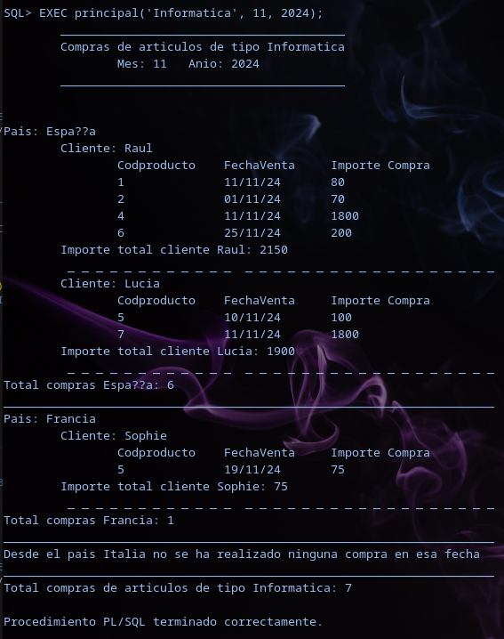
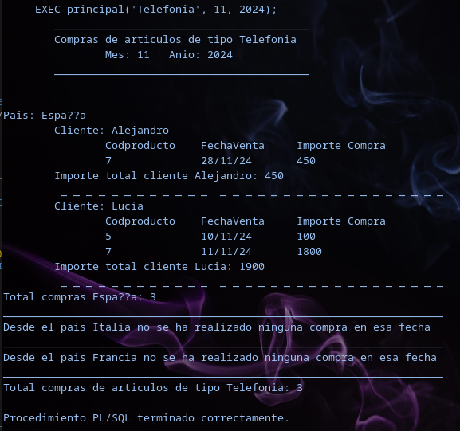
Realizar un trigger que cuando se inserte una venta mantenga correctamente actualizada la columna ProductoMasCaroComprado (que previamente has de crear y rellenar mediante un procedimiento) en la tabla Clientes.
MODIFICACIÓN TABLA CLIENTES
ALTER TABLE CLIENTES
ADD ProductoMasCaroComprado NUMBER;
Rellenar columna ProductoMasCaroComprado
CREATE OR REPLACE PROCEDURE RellenarColumna
IS
CURSOR c_productos IS
SELECT DNI_CLIENTE, CODPRODUCTO
FROM VENTAS V
WHERE V.CODPRODUCTO IN (SELECT CODPRODUCTO
FROM PRODUCTOS P
WHERE PrecioUnitario = (SELECT MAX(PRECIOUNITARIO)
FROM PRODUCTOS P2
WHERE P2.CODPRODUCTO IN (SELECT CODPRODUCTO
FROM VENTAS V2
WHERE V2.DNI_CLIENTE = V.DNI_CLIENTE)))
GROUP BY DNI_CLIENTE, CODPRODUCTO;
BEGIN
FOR v_cur IN c_productos LOOP
UPDATE CLIENTES
SET ProductoMasCaroComprado = v_cur.CODPRODUCTO
WHERE DNI_CLIENTE = v_cur.DNI_CLIENTE;
END LOOP;
END;
/
Trigger actualizar_producto_mas_caro_clientes
CREATE OR REPLACE TRIGGER ACTUALIZAR_PRODUCTO_MAS_CARO
AFTER INSERT ON VENTAS
FOR EACH ROW
DECLARE
v_precio_antiguo PRODUCTOS.PrecioUnitario%type;
v_precio_nuevo PRODUCTOS.PrecioUnitario%type;
v_codproducto_mas_caro_actual CLIENTES.ProductoMasCaroComprado%TYPE;
BEGIN
v_codproducto_mas_caro_actual:=DevolverCodproductoMascaro(:new.DNI_CLIENTE);
v_precio_antiguo:=DevolverPrecio(v_codproducto_mas_caro_actual);
v_precio_antiguo:=DevolverPrecio(:new.codproducto);
IF v_precio_nuevo > v_precio_antiguo THEN
UPDATE CLIENTES
SET ProductoMasCaroComprado = :new.codproducto
WHERE DNI_CLIENTE = :new.DNI_CLIENTE;
END IF;
END;
/
Funciones DevolverCodproductoMascaro y DevolverPrecio utilizadas en el trigger anterior
CREATE OR REPLACE FUNCTION DevolverCodproductoMascaro (p_dni CLIENTES.DNI_CLIENTE%TYPE)
RETURN CLIENTES.ProductoMasCaroComprado%TYPE
IS
v_codproducto CLIENTES.ProductoMasCaroComprado%TYPE;
BEGIN
SELECT ProductoMasCaroComprado INTO v_codproducto
FROM CLIENTES
WHERE DNI_CLIENTE = p_dni;
return v_codproducto;
END;
/
CREATE OR REPLACE FUNCTION DevolverPrecio(p_codprodcuto PRODUCTOS.CODPRODUCTO%TYPE)
RETURN PRODUCTOS.PrecioUnitario%type
IS
v_precio NUMBER;
BEGIN
SELECT PrecioUnitario INTO v_precio
FROM PRODUCTOS
WHERE CODPRODUCTO = p_codprodcuto;
return v_precio;
END;
/
COMPROBACIÓN
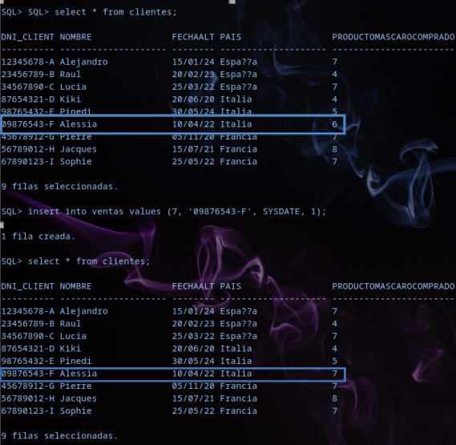
Realiza los módulos de programación necesarios para asegurar que no se venden más de cinco productos de un mismo tipo en un mismo mes natural.
Paquete para almacenar una tabla en memoria
CREATE OR REPLACE PACKAGE Nomasde5 AS
TYPE tRegistroVentas IS RECORD (
Tipo PRODUCTOS.Tipo%TYPE,
Num NUMBER
);
TYPE tTablaVentas IS TABLE OF tRegistroVentas
INDEX BY BINARY_INTEGER;
vTablaVentas tTablaVentas;
END Nomasde5;
/
Rellenar la tabla del paquete
CREATE OR REPLACE TRIGGER RellenarTablaVentas
BEFORE INSERT OR UPDATE ON VENTAS
FOR EACH ROW
DECLARE
CURSOR c_NumVentas IS
SELECT P.Tipo, COUNT(*) AS NumVentas
FROM PRODUCTOS P, VENTAS V
WHERE P.CODPRODUCTO = V.CODPRODUCTO
AND TO_CHAR(V.FechaVenta, 'MM') = TO_CHAR(:new.FechaVenta, 'MM')
AND TO_CHAR(V.FechaVenta, 'YYYY') = TO_CHAR(:new.FechaVenta, 'YYYY')
GROUP BY P.Tipo;
Indice NUMBER := 1;
BEGIN
Nomasde5.vTablaVentas.DELETE;
FOR v_Cur IN c_NumVentas LOOP
Nomasde5.vTablaVentas(Indice).Tipo := v_Cur.Tipo;
Nomasde5.vTablaVentas(Indice).Num := v_Cur.NumVentas;
Indice := Indice + 1;
END LOOP;
END;
/
Trigger que comprueba la tabla
CREATE OR REPLACE TRIGGER ComprobarVentas
BEFORE INSERT OR UPDATE ON VENTAS
FOR EACH ROW
DECLARE
v_TipoProducto PRODUCTOS.Tipo%TYPE;
v_NumVentas NUMBER;
BEGIN
v_TipoProducto := DevolverTipo(:NEW.CodProducto);
v_NumVentas := ObtenerNumVentas(v_TipoProducto);
IF v_NumVentas >= 5 THEN
RAISE_APPLICATION_ERROR(-20001, 'No puede haber mas de 5 ventas del mismo tipo en el mismo mes.');
END IF;
ActualizarVentas(v_TipoProducto);
END;
/
Función para devolver el tipo del producto
CREATE OR REPLACE FUNCTION DevolverTipo (p_codproducto PRODUCTOS.CODPRODUCTO%TYPE)
RETURN PRODUCTOS.TIPO%TYPE
IS
v_TipoProducto PRODUCTOS.TIPO%TYPE;
BEGIN
SELECT TIPO INTO v_TipoProducto
FROM PRODUCTOS
WHERE CODPRODUCTO = p_codproducto;
RETURN v_TipoProducto;
END;
/
Función para obtener el n.º de ventas
CREATE OR REPLACE FUNCTION ObtenerNumVentas(v_TipoProducto PRODUCTOS.Tipo%TYPE)
RETURN NUMBER IS
v_NumVentas NUMBER := 0;
v_Encontrado BOOLEAN := FALSE;
BEGIN
FOR i IN Nomasde5.vTablaVentas.FIRST .. Nomasde5.vTablaVentas.LAST LOOP
IF Nomasde5.vTablaVentas(i).Tipo = v_TipoProducto THEN
v_NumVentas := Nomasde5.vTablaVentas(i).Num;
v_Encontrado := TRUE;
END IF;
END LOOP;
IF NOT v_Encontrado THEN
Nomasde5.vTablaVentas(Nomasde5.vTablaVentas.COUNT + 1).Tipo := v_TipoProducto;
Nomasde5.vTablaVentas(Nomasde5.vTablaVentas.COUNT).Num := 0;
END IF;
RETURN v_NumVentas;
END;
/
Procedimiento para actualizar los datos del paquete
CREATE OR REPLACE PROCEDURE ActualizarVentas(v_TipoProducto PRODUCTOS.Tipo%TYPE) IS
i NUMBER := Nomasde5.vTablaVentas.FIRST;
BEGIN
WHILE i IS NOT NULL AND i <= Nomasde5.vTablaVentas.LAST LOOP
IF Nomasde5.vTablaVentas(i).Tipo = v_TipoProducto THEN
Nomasde5.vTablaVentas(i).Num := Nomasde5.vTablaVentas(i).Num + 1;
RETURN;
END IF;
i := Nomasde5.vTablaVentas.NEXT(i);
END LOOP;
IF i IS NULL THEN
Nomasde5.vTablaVentas(Nomasde5.vTablaVentas.COUNT + 1).Tipo := v_TipoProducto;
Nomasde5.vTablaVentas(Nomasde5.vTablaVentas.COUNT).Num := 1;
END IF;
END;
/
COMPROBACIÓN
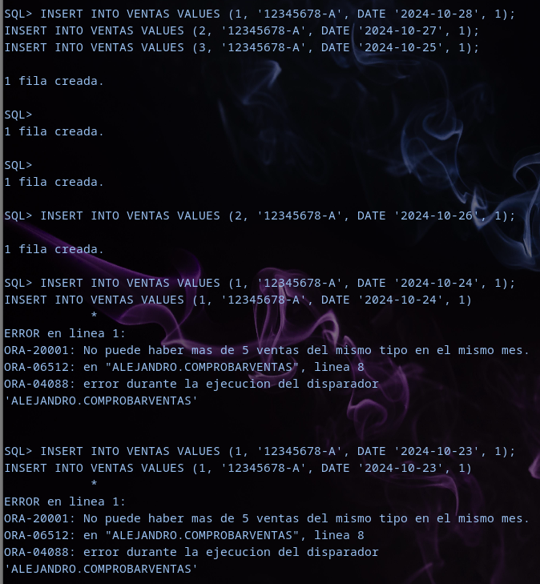
POSTGRES
Crea las siguientes tablas en Postgres y en ORACLE, con las restricciones correspondientes
TABLA PRODUCTOS
CREATE TABLE Productos(
CodProducto NUMERIC,
Nombre VARCHAR (20),
Tipo VARCHAR(15),
PrecioUnitario NUMERIC,
CONSTRAINT PK_productos PRIMARY KEY(codproducto),
CONSTRAINT Chk_Tipo CHECK(Tipo IN ('Menaje', 'Informatica', 'Telefonia')),
CONSTRAINT Chk_Precio CHECK(PrecioUnitario BETWEEN 0 AND 5000)
);
TABLA CLIENTES
CREATE TABLE Clientes(
DNI_Cliente VARCHAR(10),
Nombre VARCHAR(20),
FechaAlta DATE,
Pais VARCHAR(20),
CONSTRAINT PK_clientes PRIMARY KEY (DNI_Cliente),
CONSTRAINT Chk_FechaAlta CHECK (FechaAlta > TO_DATE ('31-12-2019', 'DD-MM-YYYY')),
CONSTRAINT Chk_DNI CHECK(DNI_CLIENTE ~ '^[0-9]{8}-[A-Z]$'),
CONSTRAINT Chk_Pais CHECK (Pais IN ('España', 'Italia', 'Francia'))
);
TABLA VENTAS
CREATE TABLE Ventas(
CodProducto NUMERIC,
DNI_Cliente VARCHAR(10),
FechaVenta DATE,
NumUnidades NUMERIC,
CONSTRAINT PK_Ventas PRIMARY KEY (CodProducto, DNI_Cliente, FechaVenta),
CONSTRAINT FK_Cod FOREIGN KEY (CodProducto) REFERENCES Productos(CodProducto),
CONSTRAINT FK_Dni FOREIGN KEY (DNI_Cliente) REFERENCES Clientes(DNI_Cliente)
);
SQL
Realizar una consulta que muestre el nombre del último producto que compró cada cliente que ha realizado alguna compra en los últimos diez días.
SELECT P.Nombre, C.Nombre
FROM Productos P, Clientes C
WHERE (P.CodProducto, C.DNI_Cliente) IN (SELECT V.codproducto, V.DNI_Cliente
FROM VENTAS V
WHERE FechaVenta = (SELECT MAX(V2.FechaVenta)
FROM VENTAS V2
WHERE V2.DNI_CLIENTE =V.DNI_CLIENTE
AND V2.FechaVenta >= CURRENT_DATE - INTERVAL '10 days'));
nombre | nombre
---------+-------
Teclado | Raul
Raton | Sophie
(2 filas)
Realizar una consulta que muestre el importe total de las compras de productos de Tipo ‘Menaje’ para cada uno de los clientes junto con el nombre de dicho cliente incluyendo aquellos que no han comprado productos de ese tipo
SELECT C.Nombre, COALESCE(SUM(P.PrecioUnitario * V.NumUnidades), 0) AS IMP_TOTAL
FROM CLIENTES C
LEFT JOIN VENTAS V ON C.DNI_CLIENTE = V.DNI_CLIENTE
LEFT JOIN PRODUCTOS P ON P.CodProducto = V.CodProducto
AND P.Tipo = 'Menaje'
GROUP BY C.Nombre;
nombre | imp_total
----------+----------
Kiki | 0
Raul | 150
Lucia | 10
Alejandro | 60
Alessia | 0
Pierre | 0
Sophie | 90
Jacques | 0
Pinedi | 0
(9 filas)
Realizar una vista llamada ‘Productos de Telefonía’ con los siguientes datos: Código del Producto, Nombre del Producto, Importe Total de las Ventas del Producto, Fecha de la última venta del producto y país del primer cliente que lo compró. En la vista solo deben aparecer los artículos de tipo ‘Telefonía’
PRIMERA VISTA
CREATE OR REPLACE VIEW PrimerPais AS
SELECT Pais, V.CODPRODUCTO
FROM Clientes C, VENTAS V
WHERE C.DNI_CLIENTE = V.DNI_CLIENTE
AND V.CODPRODUCTO IN (SELECT CODPRODUCTO
FROM PRODUCTOS p
WHERE Tipo = 'Telefonia')
AND FechaVenta = (SELECT MIN(FechaVenta)
FROM VENTAS V2
WHERE V2.CODPRODUCTO = V.CODPRODUCTO);
VISTA PRINCIPAL
CREATE OR REPLACE VIEW Productos_de_telefonia AS
SELECT P.CodProducto, P.Nombre, SUM(P.PrecioUnitario * V.NumUnidades) as IMP_TOTAL, MAX(V.FechaVenta) AS Ultima_Venta, PP.Pais AS PrimerPaisProducto
FROM PRODUCTOS P, VENTAS V, PrimerPais PP
WHERE P.CODPRODUCTO = V.CODPRODUCTO
AND PP.CODPRODUCTO = V.CODPRODUCTO
AND P.Tipo = 'Telefonia'
GROUP BY P.CODPRODUCTO, P.NOMBRE, PP.Pais;
practica=> SELECT * FROM productos_de_telefonia;
codproducto | nombre | imp_total | ultima_venta | primerpaisproducto
--------------+---------------+-----------+--------------+-----------------
7 | Redmi Note 10 | 3600 | 2024-11-11 | Francia
8 | Tablet | 750 | 2023-04-05 | Francia
9 | Smartwatch | 300 | 2022-08-25 | España
Muestra los distintos tipos de productos junto al nombre del cliente que ha comprado más unidades de ese tipo de producto en los últimos diez años.
CREATE OR REPLACE VIEW VentasPorClienteYTipo AS
SELECT P.Tipo, V.DNI_Cliente, COUNT(*) AS cuenta_ventas
FROM PRODUCTOS P, VENTAS V
WHERE P.CodProducto = V.CodProducto
AND V.FechaVenta >= CURRENT_DATE - INTERVAL '10 year'
GROUP BY P.Tipo, V.DNI_Cliente;
CREATE OR REPLACE VIEW MaxVentasPorTipo AS
SELECT Tipo, MAX(cuenta_ventas) AS max_ventas
FROM VentasPorClienteYTipo
GROUP BY Tipo;
SELECT P.Tipo, C.Nombre
FROM PRODUCTOS P, VENTAS V, CLIENTES C, MaxVentasPorTipo M
WHERE P.CodProducto = V.CodProducto
AND V.DNI_Cliente = C.DNI_Cliente
AND P.Tipo = M.Tipo
AND V.FechaVenta >= CURRENT_DATE - INTERVAL '10 year'
GROUP BY P.Tipo, C.Nombre, M.max_ventas
HAVING COUNT(*) = M.max_ventas
ORDER BY P.Tipo;
tipo | nombre
-------------+----------
Informatica | Alejandro
Menaje | Sophie
Telefonia | Lucia
Telefonia | Sophie
(4 filas)
Realiza una consulta con operadores de conjuntos que nos diga qué artículos se han vendido tanto en enero como en febrero como en marzo.
SELECT P.Nombre
FROM PRODUCTOS P
WHERE CODPRODUCTO IN (SELECT CODPRODUCTO
FROM VENTAS
WHERE TO_CHAR(FechaVenta, 'MM') = '01')
INTERSECT
SELECT P.Nombre
FROM PRODUCTOS P
WHERE CODPRODUCTO IN (SELECT CODPRODUCTO
FROM VENTAS
WHERE TO_CHAR(FechaVenta, 'MM') = '02')
INTERSECT
SELECT P.Nombre
FROM PRODUCTOS P
WHERE CODPRODUCTO IN (SELECT CODPRODUCTO
FROM VENTAS
WHERE TO_CHAR(FechaVenta, 'MM') = '03')
nombre
----------
Ordenador
Taza
PL/SQL
Realizar un procedimiento que reciba un tipo de producto, un mes y un año y muestre un listado de todas las compras que se han realizado de productos de dicho tipo en dicho mes agrupadas por país y cliente. Si no existe ningún artículo de ese tipo debe generarse una excepción, así como si no existen ventas de artículos de ese tipo. Si desde un país no se ha hecho ninguna compra debe aparecer un mensaje indicándolo.
PROCEDIMIENTO PRINCIPAL
CREATE OR REPLACE PROCEDURE principal (
p_tipo VARCHAR,
p_mes VARCHAR,
p_anio VARCHAR
) LANGUAGE plpgsql AS $$
BEGIN
CALL excepciones(p_tipo, p_mes, p_anio);
CALL encabezado(p_tipo, p_mes, p_anio);
CALL informe(p_tipo, p_mes, p_anio);
END;
$$;
EXCEPCIÓN PRINCIPAL
CREATE OR REPLACE PROCEDURE excepciones (
p_tipo VARCHAR,
p_mes VARCHAR,
p_anio VARCHAR
) LANGUAGE plpgsql
AS $$
DECLARE
v_cont NUMERIC;
BEGIN
v_cont := excecpcion_tipo(p_tipo);
IF v_cont = 0 THEN
RAISE EXCEPTION 'No existe ningún articulo del tipo %', p_tipo;
ELSE
v_cont := excepcion_ventas(p_tipo, p_mes, p_anio);
IF v_cont = 0 THEN
RAISE EXCEPTION 'No existen ventas del tipo % en la fecha indicada', p_tipo;
END IF;
END IF;
END;
$$;
Excepción no existen articulos del tipo introducido
CREATE OR REPLACE FUNCTION excecpcion_tipo (p_tipo VARCHAR)
RETURNS NUMERIC LANGUAGE plpgsql
AS $$
DECLARE
v_cont NUMERIC;
BEGIN
SELECT COUNT(*) INTO v_cont
FROM PRODUCTOS
WHERE Tipo = p_tipo;
return v_cont;
END;
$$;
Excepción sin ventas del tipo
CREATE OR REPLACE FUNCTION excepcion_ventas (
p_tipo VARCHAR,
p_mes VARCHAR,
p_anio VARCHAR
)
RETURNS NUMERIC LANGUAGE plpgsql
AS $$
DECLARE
v_cont NUMERIC;
BEGIN
SELECT COUNT (*) INTO v_cont
FROM VENTAS
WHERE CODPRODUCTO IN (SELECT CODPRODUCTO
FROM PRODUCTOS
WHERE Tipo = p_tipo)
AND TO_CHAR(FechaVenta, 'MM') = p_mes
AND TO_CHAR(FechaVenta, 'YYYY')= p_anio;
return v_cont;
END;
$$;
Excecpción Pais
CREATE OR REPLACE PROCEDURE ExcepcionPais (
p_tipo VARCHAR,
p_mes VARCHAR,
p_anio VARCHAR
)
LANGUAGE plpgsql AS $$
DECLARE
c_paises CURSOR FOR
SELECT DISTINCT Pais FROM CLIENTES
WHERE Pais NOT IN (SELECT Pais FROM CLientes C
WHERE C.DNI_CLIENTE IN (SELECT DNI_CLIENTE
FROM VENTAS
WHERE CODPRODUCTO IN (SELECT CODPRODUCTO
FROM Productos
WHERE Tipo = p_tipo)
AND TO_CHAR(FECHAVENTA, 'MM') = p_mes
AND TO_CHAR(FechaVenta, 'YYYY')= p_anio));
BEGIN
FOR v_cur IN c_paises LOOP
RAISE NOTICE 'Desde % no se ha hecho ninguna compra del tipo %', v_cur.Pais, p_tipo;
END LOOP;
END;
$$;
COMPROBACIÓN EXCEPCIONES
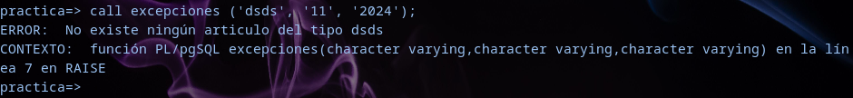
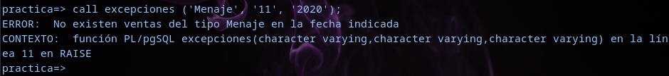
Encabezado
CREATE OR REPLACE PROCEDURE encabezado(
p_tipo VARCHAR,
p_mes VARCHAR,
p_anio VARCHAR
)
LANGUAGE plpgsql
AS $$
BEGIN
RAISE NOTICE '_____________________________________________________________';
RAISE NOTICE E'\tCompras de artículos de Tipo: %', p_tipo;
RAISE NOTICE E'\t\tMes: % Año: %', p_mes, p_anio;
RAISE NOTICE '_____________________________________________________________';
END;
$$;
Informe
CREATE OR REPLACE PROCEDURE Informe(
p_tipo VARCHAR,
p_mes VARCHAR,
p_anio VARCHAR
) LANGUAGE plpgsql
AS $$
DECLARE
c_paises CURSOR FOR
SELECT DISTINCT Pais
FROM CLIENTES
WHERE DNI_CLIENTE IN (SELECT DNI_CLIENTE
FROM VENTAS
WHERE TO_CHAR(FechaVenta, 'MM') = p_mes
AND TO_CHAR(FechaVenta, 'YYYY') = p_anio
AND CODPRODUCTO IN (SELECT CODPRODUCTO
FROM PRODUCTOS
WHERE Tipo = p_tipo));
v_total_compras_global NUMERIC := 0;
v_compras_pais NUMERIC := 0;
BEGIN
FOR v_cur IN c_paises LOOP
RAISE NOTICE 'Pais: %', v_Cur.Pais;
CALL Informe_Por_Pais(v_cur.Pais, p_tipo, p_mes, p_anio, v_compras_pais);
v_total_compras_global := v_total_compras_global + v_compras_pais;
END LOOP;
CALL ExcepcionPais(p_tipo, p_mes, p_anio);
RAISE NOTICE '_____________________________________________________________';
RAISE NOTICE 'Total Compras del Tipo %: %', p_tipo, v_total_compras_global;
END;
$$;
Informe Por País
CREATE OR REPLACE PROCEDURE Informe_Por_Pais(
p_pais VARCHAR,
p_tipo VARCHAR,
p_mes VARCHAR,
p_anio VARCHAR,
OUT p_compras_global NUMERIC
) LANGUAGE plpgsql AS $$
DECLARE
c_informe CURSOR FOR
SELECT DNI_CLIENTE
FROM CLIENTES
WHERE DNI_CLIENTE IN (SELECT DNI_CLIENTE
FROM VENTAS
WHERE TO_CHAR(FechaVenta, 'MM') = p_mes
AND TO_CHAR(FechaVenta, 'YYYY') = p_anio
AND CODPRODUCTO IN (SELECT CODPRODUCTO
FROM PRODUCTOS
WHERE Tipo = p_tipo)
AND Pais = p_pais);
v_nombre VARCHAR;
v_compras_cliente NUMERIC := 0;
v_compras_pais NUMERIC := 0;
BEGIN
FOR v_cur IN c_informe LOOP
v_nombre := Devolver_Nombre_Cliente(v_cur.DNI_CLIENTE);
RAISE NOTICE E'\tCliente: %', v_nombre;
CALL Informe_Por_Cliente(v_cur.DNI_CLIENTE, p_tipo, p_mes, p_anio, v_nombre, v_compras_cliente);
v_compras_pais := v_compras_pais + v_compras_cliente;
END LOOP;
RAISE NOTICE 'Total Compras en %: %', p_pais, v_compras_pais;
RAISE NOTICE '_____________________________________________________________';
p_compras_global := v_compras_pais;
END;
$$;
Función Devolver_Nombre_Cliente
CREATE OR REPLACE FUNCTION Devolver_Nombre_Cliente(p_dni VARCHAR)
RETURNS VARCHAR LANGUAGE plpgsql AS $$
DECLARE
v_nombre VARCHAR;
BEGIN
SELECT Nombre INTO v_nombre
FROM CLIENTES
WHERE DNI_CLIENTE = p_dni;
RETURN v_nombre;
END;
$$;
Informe_Por_Cliente
CREATE OR REPLACE PROCEDURE Informe_Por_Cliente(
p_dni VARCHAR,
p_tipo VARCHAR,
p_mes VARCHAR,
p_anio VARCHAR,
p_cliente VARCHAR,
OUT p_compras_cliente NUMERIC
) LANGUAGE plpgsql AS $$
DECLARE
c_clientes CURSOR FOR
SELECT P.CODPRODUCTO AS codproducto, FechaVenta, (V.NumUnidades * P.PrecioUnitario) AS importecompra
FROM VENTAS V, PRODUCTOS P
WHERE P.CODPRODUCTO = V.CODPRODUCTO
AND TO_CHAR(FechaVenta, 'MM') = p_mes
AND TO_CHAR(FechaVenta, 'YYYY') = p_anio
AND Tipo = p_tipo
AND DNI_CLIENTE = p_dni;
v_importe_total_cliente NUMERIC := 0;
v_compras_cliente NUMERIC := 0;
BEGIN
RAISE NOTICE E'\t\tCodProducto \tFechaVenta \tImporteCompra';
FOR v_cur IN c_clientes LOOP
RAISE NOTICE E'\t\t\t% \t% \t%', v_cur.codproducto, v_cur.FechaVenta, v_cur.importecompra;
v_importe_total_cliente := v_importe_total_cliente + v_cur.importecompra;
v_compras_cliente := v_compras_cliente + 1;
END LOOP;
RAISE NOTICE E'Importe total del Cliente %: %', p_cliente, v_importe_total_cliente;
RAISE NOTICE '- - - - - - - - - - - - - - - - - - - - - - - - - - - - - - -';
p_compras_cliente := v_compras_cliente;
END;
$$;
Comprobación
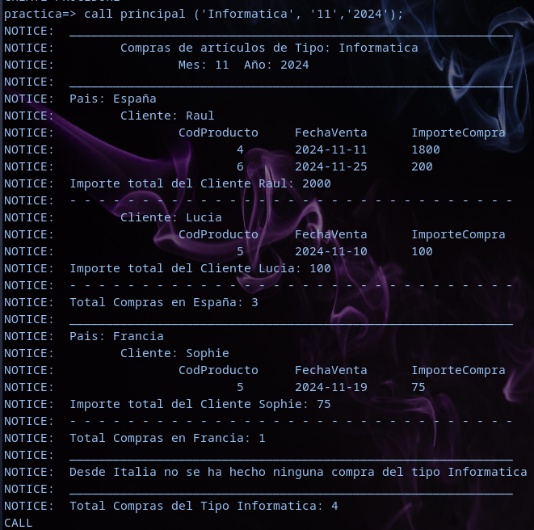
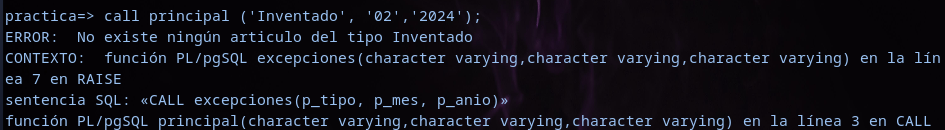
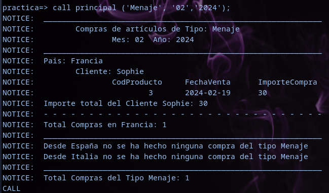
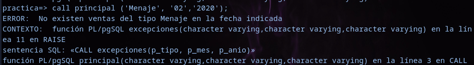
Realizar un trigger que cuando se inserte una venta mantenga correctamente actualizada la columna ProductoMasCaroComprado (que previamente has de crear y rellenar mediante un procedimiento) en la tabla Clientes.
Añadir columna en Clientes
ALTER TABLE CLIENTES
ADD COLUMN ProductoMasCaroComprado NUMERIC;
Rellenar Columna Producto Más Caro
CREATE OR REPLACE PROCEDURE Rellenar_Columna_Producto_clientes()
LANGUAGE plpgsql AS $$
DECLARE
c_productos CURSOR FOR
SELECT C.DNI_CLIENTE as cliente, V.CODPRODUCTO as codigo
FROM CLIENTES C, VENTAS V, PRODUCTOS P
WHERE C.DNI_CLIENTE = V.DNI_CLIENTE
AND V.CODPRODUCTO = P.CODPRODUCTO
AND P.PRECIOUNITARIO IN (SELECT MAX(PRECIOUNITARIO)
FROM PRODUCTOS P2, VENTAS V2
WHERE V2.CODPRODUCTO = P2.CODPRODUCTO
AND V2.DNI_CLIENTE = V.DNI_CLIENTE
)
GROUP BY cliente, codigo;
BEGIN
for v_cur IN c_productos LOOP
UPDATE CLIENTES
SET ProductoMasCaroComprado = v_cur.codigo
WHERE DNI_CLIENTE = v_cur.cliente;
END LOOP;
END;
$$;
Trigger
CREATE TRIGGER Actualizar_producto_mas_caro_clientes
AFTER INSERT OR UPDATE ON VENTAS
FOR EACH ROW
EXECUTE FUNCTION Actualizar_producto_mas_caro_clientes();
Funciones
CREATE OR REPLACE FUNCTION Actualizar_producto_mas_caro_clientes()
RETURNS TRIGGER LANGUAGE plpgsql AS $$
DECLARE
v_precio_antiguo NUMERIC;
v_precio_nuevo NUMERIC;
v_codproducto_mascaro_actual NUMERIC;
BEGIN
v_codproducto_mascaro_actual:=Devolver_CodProducto(NEW.DNI_CLIENTE);
v_precio_antiguo := DevolverPrecioProducto(v_codproducto_mascaro_actual);
v_precio_nuevo := DevolverPrecioProducto(NEW.CodProducto);
IF v_precio_nuevo > v_precio_antiguo THEN
UPDATE CLIENTES
SET ProductoMasCaroComprado = NEW.CodProducto
WHERE DNI_CLIENTE = NEW.DNI_CLIENTE;
RETURN NULL;
END IF;
RETURN NULL;
END;
$$;
Función DevolverCodProducto
CREATE OR REPLACE FUNCTION Devolver_CodProducto (p_dni VARCHAR)
RETURNS NUMERIC LANGUAGE plpgsql AS $$
DECLARE
v_codproducto NUMERIC;
BEGIN
SELECT ProductoMasCaroComprado INTO v_codproducto
FROM CLIENTES
WHERE DNI_CLIENTE = p_dni;
return v_codproducto;
END;
$$;
Función DevolverPrecioProducto
CREATE OR REPLACE FUNCTION DevolverPrecioProducto (p_codproducto NUMERIC)
RETURNS NUMERIC LANGUAGE plpgsql AS $$
DECLARE
v_precio NUMERIC;
BEGIN
SELECT PrecioUnitario INTO v_precio
FROM PRODUCTOS
WHERE CODPRODUCTO = p_codproducto;
RETURN v_precio;
END;
$$;
Comprobación Trigger
Para la comprobación inserto dos datos, una debe de actualizar la columna de Pinedi y otra es del cliente Kiki, que el producto introducido nuevo tiene el mismo valor que el que ya tiene como más caro, por lo que no debe actualizar.
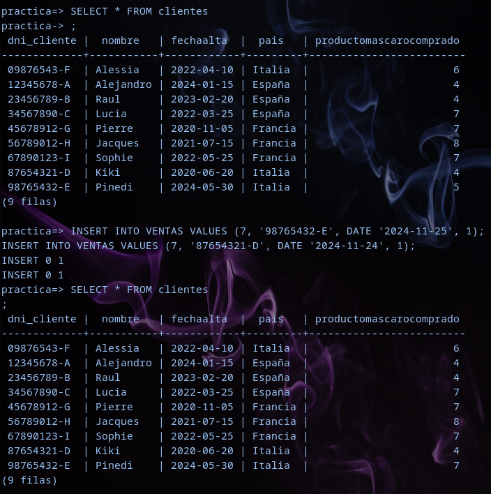